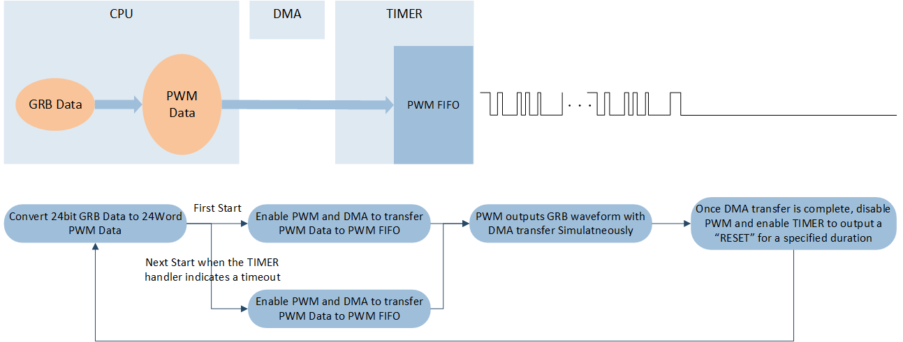
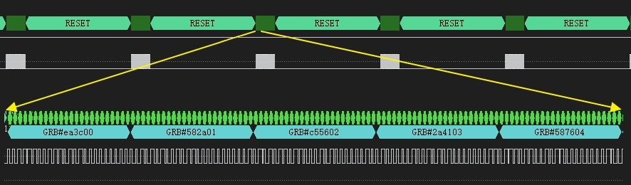

ARGB - PWM DMA
This sample demonstrates the use of ENHTIM PWM function and DMA function to output a RETURN-TO-ZERO encoded PWM waveform, simulating the ARGB communication protocol.
In this sample, RGB waveforms for 100 pixels (assuming they are chained together) are output at a refresh rate of 50 frames per second.
The system block diagram is as follows:
{kind=link}

ARGB PWM DMA Diagram
Requirements
The sample supports the following development kits:
Hardware Platforms |
Board Name |
|---|---|
RTL87x2G HDK |
RTL87x2G EVB |
For more requirements, please refer to Quick Start.
Wiring
Connect the PWM output pin P0_0 to the logic analyzer.
Configurations
The following macros can be configured to modify pin definitions.
#define ARGB_PWM_PIN P0_0The following macros can be configured to modify the period and duty cycle for each ARGB pixel.
#define ARGB_PERIOD_NS 1250 #define ARGB_DUTY_CYCLE_0 32 #define ARGB_DUTY_CYCLE_1 68
The following macros can be configured to modify the number of ARGB LEDs and refresh rate.
#define ARGB_LED_NUMBER 100 #define ARGB_REFRESH_RATE_HZ 50
Note
Configuration Notes: When ARGB_REFRESH_RATE_HZ is set to 50 Hz and ARGB_LED_NUMBER is 100, the time calculations are as follows:
Total cycle time: 20 ms (1/50 Hz)
LED data transmission time: 3 ms = 100 * 24-bit * 1250 ns
Reset time: 17 ms = 20 ms - 3 ms
Building and Downloading
This sample can be found in the SDK folder:
Project file: samples\simulation_protocol\argb\argb_pwm_dma\proj\rtl87x2g\mdk
Project file: samples\simulation_protocol\argb\argb_pwm_dma\proj\rtl87x2g\gcc
To build and run the sample, follow the steps listed below:
Open sample project file.
To build the target, follow the steps listed on the Generating App Image in Quick Start.
After a successful compilation, the app bin
app_MP_xxx.binwill be generated in the directorymdk\binorgcc\bin.To download app bin into EVB board, follow the steps listed on the MP Tool Download in Quick Start.
Press reset button on EVB board and it will start running.
Experimental Verification
After the EVB starts, observe the log information as shown in the Debug Analyzer.
Start argb sample test!
Using a logic analyzer, it can be observed that the P0_0 pin outputs 100 pixels PWM waveform every 20ms (with a refresh rate of 50 frames per second).
{kind=link}

ARGB Protocol Waveform
Code Overview
This chapter introduce the source code path, initialization, functionality implementation, etc.
Source Code Directory
Project Directory:
sdk\samples\simulation_protocol\argb\argb_pwm_dma\projSource Code Directory:
sdk\samples\simulation_protocol\argb\argb_pwm_dma\src
Source files are currently categorized into several groups as below.
└── Project: xxx sample project name
└── secure_only_app
└── Device includes startup code
├── startup_rtl.c
└── system_rtl.c
├── CMSIS includes CMSIS header files
├── CMSE Library Non-secure callable lib
├── lib includes all binary symbol files that user application is built on
├── xxx.lib
└── rtl87x2g_io.lib
├── peripheral includes all peripheral drivers and module code used by the application
├── rtl_rcc.c
├── rtl_nvic.c
├── rtl_pinmux.c
├── rtl_gpio.c
├── rtl_enh_tim.c
├── rtl_gdma.c
└── APP includes the ble_peripheral user application implementation
├── main_ns.c
└── argb_pwm_dma.c sample application source files
Initialization
The initialization flow for peripherals can refer to Initialization Flow in General Introduction.
Call
Pad_Config()andPinmux_Config()to configure the PAD and PINMUX of the corresponding pins.void board_pwm_init(void) { Pad_Config(ARGB_PWM_PIN, PAD_PINMUX_MODE, PAD_IS_PWRON, PAD_PULL_NONE, PAD_OUT_ENABLE, PAD_OUT_LOW); Pinmux_Config(ARGB_PWM_PIN, ARGB_PWM_PINMUX); }
Call
RCC_PeriphClockCmd()to enable the ENHTIMER clock.Initialize the ENHTIMER peripheral:
Define the
ENHTIM_InitTypeDeftypeENHTIM_InitStruct, and callENHTIM_StructInit()to pre-fillENHTIM_InitStructwith default values.Modify the
ENHTIM_InitStructparameters as needed. The initialization parameter configurations for ENHTIMER are shown in the table below. CallENHTIM_Init()to initialize the ENHTIMER peripheral.When using PWM function, call
ENHTIM_WriteCCFIFO()to refill output duty cycle.When using TIMER function, call
NVIC_Init()to configure the NVIC. For NVIC-related configurations, refer to Interrupt Configuration. CallENHTIM_ClearINTPendingBit()to clear the ENHTIM interrupt.
ENHTIMER Hardware Parameters |
Setting in the |
ENHTIMER(PWM) |
ENHTIMER(TIMER) |
|---|---|---|---|
Counter mode |
|||
PWM mode |
|||
Toggle output polarity |
- |
||
Count value |
|
|
|
GDMA function enable |
- |
||
GDMA target |
- |
Call
RCC_PeriphClockCmd()to enable the GDMA clock.Initialize the GDMA peripheral:
Define the
GDMA_InitTypeDeftypeGDMA_InitStruct, and callGDMA_StructInit()to pre-fillGDMA_InitStructwith default values.Modify the
GDMA_InitStructparameters as needed. The initialization parameter configurations for GDMA are shown in the table below. CallGDMA_Init()to initialize the GDMA peripheral.Call
NVIC_Init()to configure the NVIC. For NVIC-related configurations, refer to Interrupt Configuration.Call
GDMA_INTConfig()to enable DMA Transfer interrupt.
GDMA Hardware Parameters |
Setting in the |
GDMA |
|---|---|---|
Channel Num |
||
Source Data Size |
||
Destination Data Size |
||
Source Burst Transaction Length |
||
Destination Burst Transaction Length |
||
Destination Handshake |
||
Transfer Direction |
||
Source Address Increment or Decrement |
||
Destination Address Increment or Decrement |
||
Source Address |
|
|
Buffer Size |
4 |
|
Destination Address |
|
Functional Implementation
Define the
argb_datato be sent. Call theargb_send_frame_datafunction to convert the 24-bitargb_datainto 24-wordargb_pwm_data. Configure the DMA to prepare for transferring the convertedargb_pwm_datato the PWM FIFO.Set the DMA buffer size, DMA source address, and DMA destination address based on the provided data.
Each pixel is composed of 24 bits (RGB portion), and each bit is converted into a PWM signal represented by either PWM_CCR_COUNT_1 (high-level duration) or PWM_CCR_COUNT_0 (low-level duration), depending on whether the bit is 1 or 0.
void argb_send_frame_data(const uint32_t data[], uint32_t length) { GDMA_SetBufferSize(ARGB_DMA_CH_INDEX, 24 * length); GDMA_SetSourceAddress(ARGB_DMA_CH_INDEX, (uint32_t)argb_pwm_data); GDMA_SetDestinationAddress(ARGB_DMA_CH_INDEX, (uint32_t) & (ARGB_TIMER->ENHTIM_CCR_FIFO_ENTRY)); /* data code */ for (uint32_t j = 0; j < length; j++) { uint32_t value = data[j]; for (uint32_t i = 0; i < 24; i++) { argb_pwm_data[j * 24 + i] = (value & (1 << (23 - i))) ? PWM_CCR_COUNT_1 : PWM_CCR_COUNT_0; } } }
Call
GDMA_Cmd()andENHTIM_Cmd()to enable DMA transfer and enable ENHTIMER to output the PWM waveform.void argb_pwm_dma(void) { board_pwm_init(); driver_pwm_init(); driver_gdma_init(); argb_send_frame_data(argb_data, sizeof(argb_data) / 4); ENHTIM_Cmd(ARGB_TIMER, ENABLE); GDMA_Cmd(ARGB_DMA_CH_NUM, ENABLE); }
After the DMA transfer is complete, continuously check the FIFO to ensure that all data has been fully output. Then, disable the PWM output and enable the TIMER to time the "RESET" period.
void ARGB_DMA_HANDLER(void) { GDMA_ClearINTPendingBit(ARGB_DMA_CH_NUM, GDMA_INT_Transfer); while (ENHTIM_GetFIFOFlagStatus(ARGB_TIMER, ENHTIM_FLAG_CCR_FIFO_EMPTY) == RESET) {} ENHTIM_Cmd(ARGB_TIMER, DISABLE); driver_enhtim_init(); argb_send_frame_data(argb_data, sizeof(argb_data) / 4); }
When the timer reaches the set period, disable the TIMER function and re-enable the DMA and PWM functions to start a new data refresh cycle.
void ARGB_TIMER_HANDLER() { ENHTIM_ClearINTPendingBit(ARGB_TIMER, ENHTIM_INT_TIM); ENHTIM_Cmd(ARGB_TIMER, DISABLE); driver_pwm_init(); ENHTIM_Cmd(ARGB_TIMER, ENABLE); GDMA_Cmd(ARGB_DMA_CH_NUM, ENABLE); }
See Also
Please refer to the relevant API Reference: